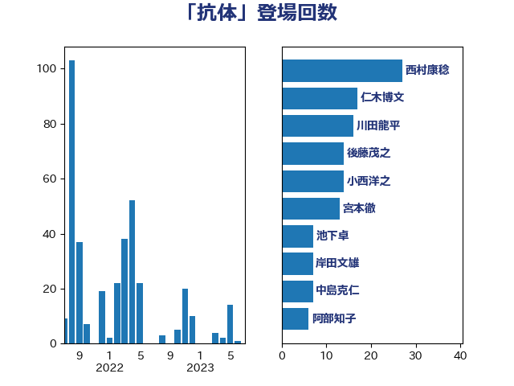

単語「抗体」

| 西村康稔 | 自由民主党 | 27 回 |
| 仁木博文 | 無所属 | 17 回 |
| 川田龍平 | 立憲民主党 | 16 回 |
| 後藤茂之 | 自由民主党 | 14 回 |
| 小西洋之 | 立憲民主党 | 14 回 |
| 宮本徹 | 日本共産党 | 13 回 |
| 池下卓 | 日本維新の会 | 7 回 |
| 岸田文雄 | 自由民主党 | 7 回 |
| 中島克仁 | 立憲民主党 | 7 回 |
| 阿部知子 | 立憲民主党 | 6 回 |
| 菅義偉 | 自由民主党 | 6 回 |
| 新妻秀規 | 公明党 | 6 回 |
| 岡本あき子 | 立憲民主党 | 6 回 |
| 加田裕之 | 自由民主党 | 6 回 |
| 徳永エリ | 立憲民主党 | 5 回 |
| 山本博司 | 公明党 | 5 回 |
| 古川俊治 | 自由民主党 | 5 回 |
| 倉林明子 | 日本共産党 | 5 回 |
| 高橋光男 | 公明党 | 4 回 |
| 福島みずほ | 社会民主党 | 4 回 |
| 石井章 | 日本維新の会 | 4 回 |
| 高木かおり | 日本維新の会 | 3 回 |
| 高市早苗 | 自由民主党 | 3 回 |
| 田村智子 | 日本共産党 | 3 回 |
| 山際大志郎 | 自由民主党 | 3 回 |
| 山口那津男 | 公明党 | 3 回 |
| 吉田統彦 | 立憲民主党 | 3 回 |
| 佐藤英道 | 公明党 | 3 回 |
| 高階恵美子 | 自由民主党 | 2 回 |
| 馬場伸幸 | 日本維新の会 | 2 回 |
| 青山大人 | 立憲民主党 | 2 回 |
| 石橋通宏 | 立憲民主党 | 2 回 |
| 石井苗子 | 日本維新の会 | 2 回 |
| 田村憲久 | 自由民主党 | 2 回 |
| 浜口誠 | 国民民主党 | 2 回 |
| 櫻井充 | 自由民主党 | 2 回 |
| 打越さく良 | 立憲民主党 | 2 回 |
| 安江伸夫 | 公明党 | 2 回 |
| 塩田博昭 | 公明党 | 2 回 |
| 高橋克法 | 自由民主党 | 1 回 |
| 青柳陽一郎 | 立憲民主党 | 1 回 |
| 阿部弘樹 | 日本維新の会 | 1 回 |
| 遠藤敬 | 日本維新の会 | 1 回 |
| 足立康史 | 日本維新の会 | 1 回 |
| 芳賀道也 | 国民民主党 | 1 回 |
| 石垣のりこ | 立憲民主党 | 1 回 |
| 田中健 | 国民民主党 | 1 回 |
| 玉木雄一郎 | 国民民主党 | 1 回 |
| 玄葉光一郎 | 立憲民主党 | 1 回 |
| 清水真人 | 自由民主党 | 1 回 |
| 浦野靖人 | 日本維新の会 | 1 回 |
| 浜地雅一 | 公明党 | 1 回 |
| 浅野哲 | 国民民主党 | 1 回 |
| 梅村聡 | 日本維新の会 | 1 回 |
| 柚木道義 | 立憲民主党 | 1 回 |
| 柘植芳文 | 自由民主党 | 1 回 |
| 東徹 | 日本維新の会 | 1 回 |
| 御法川信英 | 自由民主党 | 1 回 |
| 山田美樹 | 自由民主党 | 1 回 |
| 山崎正恭 | 公明党 | 1 回 |
| 山井和則 | 立憲民主党 | 1 回 |
| 山下芳生 | 日本共産党 | 1 回 |
| 小林鷹之 | 自由民主党 | 1 回 |
| 大塚耕平 | 国民民主党 | 1 回 |
| 古川元久 | 国民民主党 | 1 回 |
| 勝俣孝明 | 自由民主党 | 1 回 |
| 加藤勝信 | 自由民主党 | 1 回 |
| 伊佐進一 | 公明党 | 1 回 |
| 井坂信彦 | 立憲民主党 | 1 回 |
| 井上貴博 | 自由民主党 | 1 回 |
| 中川貴元 | 自由民主党 | 1 回 |